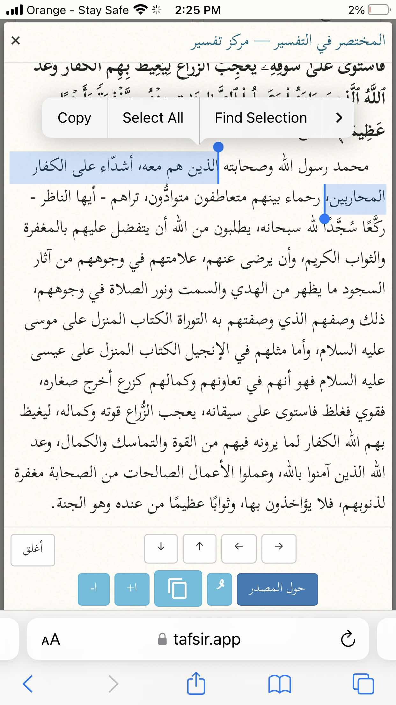

First I would addressing logical arguments
Argument 1
Marriage itself is a form of mercy and love as Allah states:
“And one of His signs is that He created for you spouses from among yourselves so that you may find comfort in them. And He has placed between you compassion and mercy. Surely in this are signs for people who reflect.” [Sūrat Ar-Rūm 30:21]
We know it is permissible to have non muslim spouses (Jews and Christians), people may object by saying only people of the book, except captives can be milk yamin out of any religion which there is dispute.
Allah states:
“Today all good, pure foods have been made lawful for you. Similarly, the food of the People of the Book1 is permissible for you and yours is permissible for them. And ˹permissible for you in marriage˺ are chaste believing women as well as chaste women of those given the Scripture before you—as long as you pay them their dowries in wedlock, neither fornicating nor taking them as mistresses.” [Sūrat al-Mā’idah 5:5]
How can you marry someone that you don’t love that gives an eternal contradiction to salafis
Argument 2:
The Qur’ān explicitly mentioned that the prophet used to love Abu Talib who was a non Muslim
Allāh states:
“You surely cannot guide whoever you like ˹O Prophet˺, but it is Allah Who guides whoever He wills, and He knows best who are ˹fit to be˺ guided.” [Sūrat Al-Qaṣaṣ 28:56]
The Qur’ān also explicitly mentions you can befriend non Muslim parents even if they aren’t Muslims
Allāh States:
“But if they pressure you to associate with Me what you have no knowledge of, do not obey them. Still keep their company in this world courteously, and follow the way of those who turn to Me ˹in devotion˺. Then to Me you will ˹all˺ return, and then I will inform you of what you used to do.” [Sūrat Lūqman 31:15]
Now lets look at the evidences provided by Salafis to prove you have to hate the disbelievers themselves ?
1: Sūrat Al-Fātḥ 48:29
In mukhtasar tafsir al-Qur’ān we read:
“Those who are with him are firm with combatant disbelievers”
When you read the context 4 verses before
Allāh states:
“They are the ones who disbelieved and obstructed you from al-Masjid al-Ḥarām while the offering was prevented from reaching its place of sacrifice.” [Sūrat Al-Fātḥ 48:25]
Also we read
Does 48:29 order for violence lets read the tafsir of maariful Quran
This means that anyone who has subjugated his friendship, love, hatred and enmity under the Will of Allah has perfected his faith. This clarifies another point: The Companions' being hard against the unbelievers does not imply that they were never tender towards any non-believer. In fact it means that where Allah and His Messenger enjoins them to be hard against the non-believers, they would simply comply without taking into account the relations of kinship or friendship. As far as kind and equitable dealing with them is concerned, the Qur'an itself promulgates:
لَّا يَنْهَاكُمُ اللَّـهُ عَنِ الَّذِينَ لَمْ يُقَاتِلُوكُمْ فِي الدِّينِ وَلَمْ يُخْرِجُوكُم مِّن دِيَارِكُمْ
"Allah does not forbid you from those who did not fight you on account of faith, and did not expel you from your homes, that you do good to them, and deal justly with them." (60:8).
There is a large number of incidents where Allah's Messenger ﷺ and the blessed Companions ؓ displayed their kindness and compassion to the helpless and needy unbelievers. Treating them with justice and equity is the general injunction of Islam. No activity flouting justice and equity is permissible even in the field of pitched battle.
What about Qūr’ān 9:123 this could be referred back to 9:4 9:13 and 2:190

2. 58:22 could be refuted by reading tafsir ibn ashur it also talks about fighters as he demonstrates and also it doesn’t involve dhimis
3. 60:4
This could be referred back to that the people of abraham were combatants, now we should continue reading and read verse 8 of the same chapter
4. The last one the Hassan hadith of the prophet where he states only accompaign a believer
Al-Khattabi (May God have mercy on him) states that this hadith isn’t general as
Allāh states:
They give food in spite of love for it to the needy, the orphan, and the captive, saying: We feed you only for the countenance of Allah. We do not desire from you reward or gratitude.
Surat Al-Insan 76:8-9
Ibn Kathir explained this verse, writing:
وَقَالَ ابْنُ عَبَّاسٍ كَانَ أُسَرَاؤُهُمْ يَوْمَئِذٍ مُشْرِكِينَ وَيَشْهَدُ لِهَذَا أَنَّ رَسُولَ اللَّهِ صَلَّى اللَّهُ عَلَيْهِ وَسَلَّمَ أَمَرَ أَصْحَابَهُ يَوْمَ بَدْرٍ أَنْ يُكْرِمُوا الْأُسَارَى فَكَانُوا يُقَدِّمُونَهُمْ عَلَى أَنْفُسِهِمْ عِنْدَ الْغَدَاءِ وَهَكَذَا قَالَ سَعِيدُ بْنُ جُبَيْرٍ وَعَطَاءٌ وَالْحَسَنُ وَقَتَادَةُ وَقَدْ وَصَّى رَسُولُ اللَّه صلى الله عليه وسلم بالإحسان إلى الأرقاء في غيرما حديث حتى إنه كان آخر ما أوصى أن جعل يقول الصلاة وما ملكت أيمانكم
Ibn Abbas said: Their captives on that day were idolaters. The evidence for that is that the Messenger of Allah, peace and blessings be upon him, commanded his companions to be generous to the prisoners on the day of Badr and they would give preference to them in meals over themselves. Such was reported by Sa’eed ibn Jubair, Ata’, Al-Hasan, and Qatadah. The Messenger of Allah had enjoined good treatment towards captives in more than one tradition, so often that one of the last things he said was: Guard the prayer and those whom your right hand possesses.
Source: Tafseer Ibn Kathir 76:8
And they were non Muslims, second you can love someone without taking them as a friend
Now for scholarly evidence
Ibn Al-Wazir writes (After his repentance) :
"And his lord ordered him to disavowal from there works and not from them that is why the prophet disavowled what khalid did and didn't disavowel from khaled himself. And from there the extremists of Al-bara' (disavowel) allowed loving a fasiq from his good doings even if he was a kaffir (disbeliever) like Abu talib the prophet (PBUH) used to love him."
Ithar Al-Haqq (1/373)
Sheikh Saleh Al-Sheikh said:
“What is meant by that is to know that loyalty and disavowal are for the unbeliever, i.e., for the appointed, of three degrees:
The first degree: allegiance and love of the infidel for his infidelity, and this is infidelity.
The second degree: His love, affection, and honor for the world absolutely like the affliction for a muslim. This is not permissible, forbidden, and a reprehensible type of loyalty.
The third degree: that it is in exchange for a blessing, or in exchange for kinship, because the type of affection that takes place, or charity, or the like, in non-warriors, this has a concession.
And that is why a lot of scholars have mentioned that there is no problem for someone to love his Christian or Jewish wife
Their evidence was the hadith of asma collected by Al-Būkhari (3183)
Narrated Asma 'bint Abi Bakr:
During the period of the peace treaty of Quraish with Allah's Messenger (ﷺ), my mother, accompanied by her father, came to visit me, and she was a pagan. I consulted Allah's Messenger (ﷺ), "O Allah's Messenger (ﷺ)! My mother has come to me and she desires to receive a reward from me, shall I keep good relation with her?" He said, "Yes, keep good relation with her."
[Sharh Al-Aquidah Al tahawiyah volume 2, p.1134-1135]
Allah says in surah al-Mumtahinah:
Allah does not forbid you to deal justly and kindly with those who did not fight against you on account of religion and did not drive you out of your homes. Verily, Allah loves those who deal justly. * It is only those who fought against you on account of religion and drove you out of your homes, and helped to drive you out that Allah forbids you to take as friends and allies. And whosoever will befriend them, then such are the wrongdoers. [60:8-9]
The great scholar Ibn al-Qayyim mentioned the following point regarding these ayaat:
فإن الله سبحانه لما نهى في أول السورة عن اتخاذ المسلمين الكفار أولياء وقطع المودة بينهم وبينهم ، توهم بعضهم أن برهم والإحسان إليهم من الموالاة والمودة ، فبين الله سبحانه أن ذلك ليس من الموالاة المنهي عنها ، وأنه لم ينه عن ذلك بل هو من الإحسان الذي يحبه ويرضاه ، وكتبه على كل شيء ، وإنما المنهي عنه تولي الكفار والإلقاء إليهم بالمودة
When Allah prohibited the Muslims from taking the disbelievers as close friends and allies and cut off the affection between them at the beginning of this surah [60:1], some might think that birr and ihsan – good behavior and excellent treatment – towards them would fall under those prohibited categories of close friendship and affection.
So Allah clarified that these things are not part of the close relationships that He had prohibited, and that He does not prohibit the believers from them. On the contrary, birr and ihsan towards them falls within the excellent behavior which Allah loves and is pleased with, and which He has ordained for everything. What is prohibited is only taking the disbelievers as close friends and allies and meeting them with love and affection.
[Ahkaam Ahl al-Dhimmah 1/301]
Mustafa al-‘adawi on this
https://m.youtube.com/watch?v=P1yO4akIMdI
Hassan Al-DaDu on this
https://m.youtube.com/watch?v=1bBKRLyu_fc
Ibn Rajab reported:
قَالَ بَعْضُ الصَّالِحِينَ مِنَ السَّلَفِ أَهْلُ الْمَحَبَّةِ لِلَّهِ نَظَرُوا بِنُورِ اللَّهِ وَعَطَفُوا عَلَى أَهْلِ مَعَاصِي اللَّهِ مَقَتُوا أَعْمَالَهُمْ وَعَطَفُوا عَلَيْهِمْ لِيُزِيلُوهُمْ بِالْمَوَاعِظِ عَنْ فِعَالِهِمْ وَأَشْفَقُوا عَلَى أَبْدَانِهِمْ مِنَ النَّارِ وَلَا يَكُونُ الْمُؤْمِنُ مُؤْمِنًا حَقًّا حَتَّى يَرْضَى لِلنَّاسِ مَا يَرْضَاهُ لِنَفْسِهِ
Some of the righteous predecessors said: The people who love Allah look by the light of Allah, and they are compassionate with those who disobey Allah. They hate their actions but show mercy to them so that through their admonitions they might leave their actions. They are afraid that the Hellfire will consume their bodies. The believer will not truly be a believer until he is pleased for people to have what he is pleased for himself.
Source: Jami’ Ulum wal-Hikam 13
In conlusion:
Material love is permissible as for love for religion that is disbelief
Shaykh ‘Abdur-Rahmaan Al-Baraak said: “Innate love may coexist with the hatred of a disbeliever’s disbelief, like the innate love for one’s disbelieving parents; it is incumbent on their Muslim child to hate their disbelief for the sake of Allah, and this does not contradict the innate love he has for them as his parents, being part of his natural disposition, because loving one’s parents and relatives is innate, just as the Prophet, sallallaahu ‘alayhi wa sallam, loved his paternal uncle given the ties of kinship bonding them together despite his disbelief. Allah, The Exalted, Says (what means): {Indeed [O Muhammad] you do not guide whom you like, but Allah guides whom He wills.} [Quran 28:56] This also applies to the love a Muslim man feels for his Christian or Jewish wife, as it is incumbent on him to hate her disbelief, but this does not prevent loving her the way a man loves his wife. He loves her in one respect and hates her in another.” [End of quote]
Imam Muhammad says:
"Bab Sillat al-Mushrik wa dhikr 'an Abi Marwan al-Khazai said: I asked Mujahid: There is a man among the polytheists who is a relative of mine and I have money owed to him. Should I maintain ties with him? He said: Yes, maintain ties with him."
Shams al-A'immah al-Sarakhsi said:
"And based on this, we say: There is no harm in a Muslim maintaining ties with a polytheist, whether they are close or distant, whether they are an enemy or a dhimmi (non-Muslim protected under Islamic rule)."